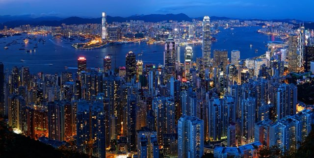
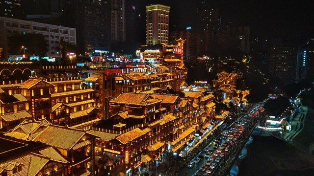
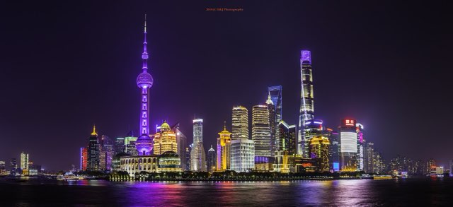
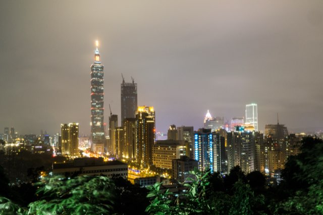
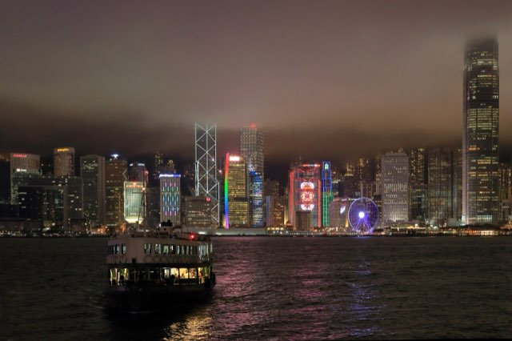
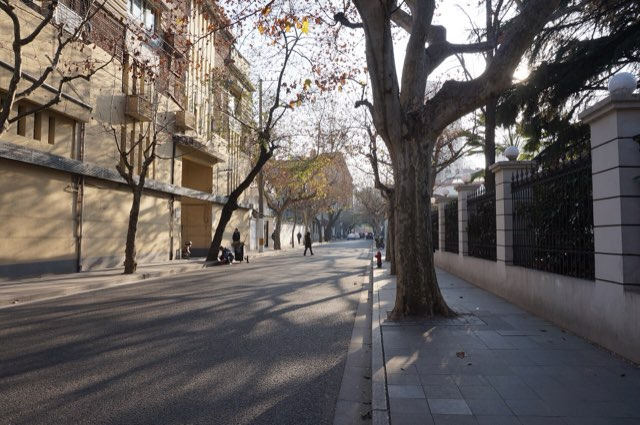
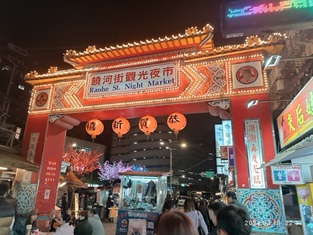

AUS → HKG
One stop is the goal. Search departures Nov 10 and Nov 11 to land Nov 12. Strong connection patterns run through SFO, LAX, DFW, IAH or TPE.
$900–1,600 economy open-jaw planning band
Hong Kong first. A conditional Shenzhen day trip. Then Chongqing, Shanghai and Taipei—with Thanksgiving dinner at Jen’s family’s table.
Route locked · booking research current July 17, 2026



Shenzhen is not a hotel stop. If the five-day Shenzhen Special Economic Zone port visa is issued, it is one same-day outing from Hong Kong through an eligible VOA crossing. If it is refused, the trip continues unchanged.
Important date-line reality: to be in Hong Kong on November 12, most Austin itineraries require leaving November 10 or 11. The trip’s published dates begin at the Hong Kong arrival.
Hong Kong → Chongqing → Shanghai → Taipei
Seventeen hotel nights, with no stay shorter than three nights. Transfer days have deliberately light evenings.
Book as two layers: one open-jaw long-haul ticket (Austin → Hong Kong; Taipei → Austin), then three regional one-ways. Prices below are planning bands, not live quotes.
One stop is the goal. Search departures Nov 10 and Nov 11 to land Nov 12. Strong connection patterns run through SFO, LAX, DFW, IAH or TPE.
Book nonstop only. Roughly 2½–3 hours in the air. Current route coverage includes multiple carriers; favor a late-morning flight and avoid mainland connections.
Prefer Hongqiao (SHA). The route has abundant nonstop service; SHA saves a long airport transfer and puts the group near Xintiandi faster than PVG.
Best convenience: SHA → TSA. Best schedule depth: PVG → TPE. Both are valid mainland exits; choose the best daytime nonstop after comparing total door-to-door time.
One stop, protected ticket. Compare SFO, LAX, SEA, DFW and IAH routings. Do not save a little money with a self-transfer after a four-city trip.
At Chongqing immigration, carry the confirmed Shanghai → Taipei ticket. If a schedule change moves that flight beyond the 240-hour window, fix it before departure.
The best group bases optimize evenings and transport—not just the room. Dollar bands are rough nightly planning ranges before tax; use refundable bookings and reprice.
Small heritage boutique on Stone Slab Street. Walk to Central dining, Tai Kwun, Airport Express and the Peak Tram; Admiralty’s direct East Rail connection also keeps the Shenzhen outing practical.
More social and better value, surrounded by Kowloon food. Convenient to West Kowloon and Hung Hom, though less romantic than Central for a first visit.
Choose it for the harbour view and group-wow factor. It is brilliant for Kowloon evenings, but Central nightlife and the Peak require a ferry or MTR ride.
Studios through three-bedroom apartments, kitchens and laundry inside the city’s landmark complex. Strong group setup within walking distance of Jiefangbei, cableway and Hongya Cave.
Reliable central base at a friendlier price. Start walks downhill through Yuzhong and use the metro back rather than choosing a viral cliff hotel with awkward access.
Polished river-view luxury across from the Yuzhong skyline. Pick it for rooms and service; pick Ascott or Glenview if walking out into the old-city action matters more.
Best all-trip compromise: walkable lanes and dining, multiple metro lines and a calm return after long days. Five nights make location worth paying for.
Younger design language in essentially the same strong neighborhood. Compare renovated-room inventory and refundable rates directly against the Langham.
Substantial savings with metro access and an easy Yu Garden morning. Less neighborhood charm at night than Xintiandi, but a rational group-value candidate.
Stylish, friendly and well placed for restaurants, MRT, Xinyi and Thanksgiving-family logistics. The neighborhood feels lived-in rather than purely commercial.
Large, polished and extremely practical for Zhongshan dining, shopping and Ningxia Night Market. A safer conventional-luxury choice for a mixed group.
André Fu’s 2025 opening is the hotel-lover pick: large rooms, serious design and a destination bar complex. Excellent, but the premium is better spent only if the hotel is part of the trip.
Re-ranked July 2026: official guides establish what is open; current travel blogs explain how visits actually work; TripAdvisor review patterns and recent traveler forums expose crowd traps. “Essential” means protect the time. “If clear” and “quick hit” mean do not force it.

The landing pad and the food capital: harbour, hills, dense neighborhoods and enough time to absorb the flight.
If the VOA is issued, give the day one clear theme: see the young megacity’s hardware markets, transformation story and skyline. The train is short; the border process is the variable.
Target: Saturday, Nov 14. Reconfirm VOA-office hours the week of travel.
Three dimensions, two rivers and one intentionally spicy dinner. The city itself is the attraction.

The longest mainland stay earns a rhythm: old lanes, world-class museums, skyline theatre and one slow day.

A soft landing after mainland China: family, night markets, hot springs and the best transit of the trip.
Reserve only a few anchors. Everything else should stay flexible enough for queues, jet lag and spontaneous finds.
Ingredient-led Cantonese and the trip’s most competitive reservation. Build one Hong Kong day around it only if the official release succeeds.
Tiny Central roast-meat institution; no ceremony, fast turnover and one of the clearest “you are in Hong Kong” lunches.
One-star yakitori with whole-bird grilling, whisky and group energy. More fun than another formal Cantonese room.
Central, high-energy and easier to navigate than a distant neighborhood room. Use Dianping/Amap to confirm the current branch.
The city’s daily ritual is a better food memory than chasing three hotpot brands. Try a different busy noodle counter each morning.
Sophisticated Shanghainese food in a preserved 1920s townhouse. This is the destination dinner that belongs specifically to Shanghai.
Classic soup dumplings without hotel polish. Go early and verify the current 127 Huanghe Road location.
Refined heritage recipes in a 1930s-style mansion—an intentional Taiwanese meal, not another international tasting menu.
Compact, atmospheric and easy on arrival night. Bring cash and split dishes so the group can try more.
Expect the trip to cool and moisten as it moves north and inland, then soften again in Taipei. These are planning averages, not forecasts.
| Stop | Typical daytime | Typical night | Rain character | Pack / plan |
|---|---|---|---|---|
| Hong Kong | 24–27°C · 75–81°F | 19–22°C · 66–72°F | Usually one of the drier, clearer periods | Hiking clothes, sun protection, one light rain shell |
| Shenzhen | 24–27°C · 75–81°F | 18–21°C · 64–70°F | Generally dry, but warm in direct sun | Same as Hong Kong; passport pouch for the border |
| Chongqing | 14–18°C · 57–64°F | 10–13°C · 50–55°F | Misty, gray and damp more often than truly stormy | Layer, waterproof shoes, compact umbrella |
| Shanghai | 14–19°C · 57–66°F | 8–13°C · 46–55°F | Changeable; cold rain is possible | Real jacket, thin sweater, rain shell |
| Taipei | 21–25°C · 70–77°F | 17–20°C · 63–68°F | Northeast monsoon can bring showers, especially hills | Umbrella and light shell; check Jiufen before committing |
New detail photos via Wikimedia Commons: Huaqiangbei by Mx. Granger (CC0); National Palace Museum (CC0); Beitou Hot Spring Museum by Tatsundo h (public domain); Longshan Temple by Bgag; Shanghai xiaolongbao by Robigasp (CC BY-SA 4.0); Taiwanese braised pork rice by Ralff Nestor Nacor (CC BY-SA 4.0). Taipei skyline: Heeheemalu (CC BY-SA 2.0); Raohe Night Market: Ounfs Robmmy 238 (CC0). Other photo credits remain with the source files collected for this trip dossier. Flight schedules, fares, border rules, opening hours and restaurant operations can change; recheck before purchase and again before travel.